Captação de áudio
Contextos
Existem dois tipos principais de situações para captação de áudio: sessões internas (em estúdio) e externas.
Externas
É quando a equipe vai a campo para captar sons em diferentes locações. Podem ser desde locais altamente especializados (indústrias, estandes de tiro, oficinas) até lugares cotidianos (casas, mercados, ruas). Algumas dicas para fazer o melhor proveito desse tipo de sessão:
- Carregar baterias para gravador e outros dispositivos (se possível, ter duas)
- Falar no microfone qual o som sendo gravado a seguir (equivalente à claquete)
- Se possível, ter mais de um microfone gravando o mesmo som de posições diferentes
- Cuidar para que o som não “estoure” (entre alto demais no sistema)
- Use bons fones de ouvido para ouvir o que está sendo gravado
- Reserve alguns minutos para gravar a ambiência do local (o silêncio)
Internas (estúdio)
Em gravações internas, a estrutura de gravação está mais protegida e pode ser menos portátil e mais poderosa. Normalmente, uma gravação interna deve acontecer em um estúdio com bom isolamento acústico e ventilação, assim como um espaço separado para equipamentos de gravação e monitoramento de forma que o mesmo não interfira com as gravações. Em estúdio é possível trabalhar com combinações mais complexas de microfones e instrumentos, enquanto que em gravações externas temos mais abertura a uma diversidade de sons espontâneos. Em gravações de estúdio também é possível, no caso de gravações musicais, conectar instrumentos elétricos em linha, ou seja, diretamente à interface de gravação, usando os cabos desses instrumentos.
Equipamentos
Microfones
Tipos de microfones
Existem dois tipos principais de microfones, dinâmicos e condensadores. Microfones dinâmicos são usados para captar música ao vivo, normalmente tem uma faixa de frequência limitada e são mais baratos. Microfones condensadores captam uma faixa de frequência maior, usam alimentação externa, são mais caros e são usados tanto em gravação de estúdio quanto em externas. Outros tipos de microfones bastante utilizados são os microfones de contato, que não captam as vibrações do ar, mas do objeto em que estão tocando, e microfones de lapela, usados para captar a fala de forma menos invasiva e muito utilizados para gravação de vídeo.
| Microfone condensador | Microfone dinâmico | Microfone de contato | Microfone de lapela |
|---|---|---|---|
| 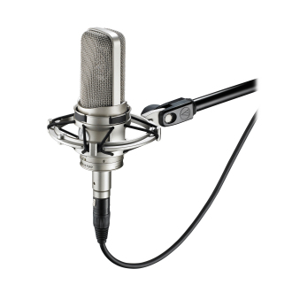 | 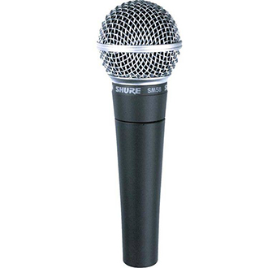 | 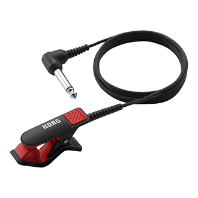 | 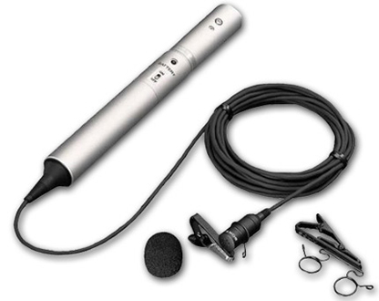 |
Além desses dois tipos básicos, temos os padrões de captação de cada microfone. Microfones cardióides ou unidirecionais captam som em uma única direção e são bastante indicados para gravação de voz. Um outro padrão bastante utilizado é o shotgun ou boom, que capta sons a distâncias maiores de forma bastante direcionada. Microfones omnidirecionais captam em várias direções e são mais usados para gravação de som ambiente e efeitos sonoros.
| Omnidirecional | Cardióide | Boom |
|---|---|---|
| 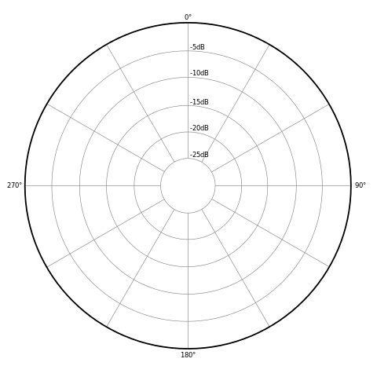 | 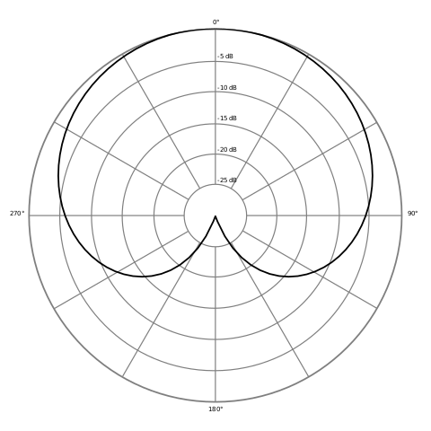 | 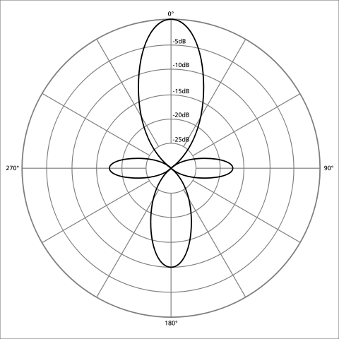 |
Posicionamento
Fontes de som soam diferentes dependendo de nossa distância e posição relativa. Na hora de grava um som, experimente com diferentes distâncias e ângulos possíveis, tomando cuidado para tentar captar apenas o som desejado, se possível. É fundamental levar em conta o tipo de microfone utilizado, assim como seu padrão de captação na hora de posicionar e apontar os microfones. Alguns tipos específicos de posicionamento e angulação são bastante interessantes, como o sistema binaural, que tenta imitar o posicionamento das orelhas na cabeça humana para dar maior imersão ao som, ou gravações em estéreo, que criam um espaçamento maior do som ao dividí-lo em direita e esquerda.
Exemplo de gravação musical utilizando um microfone binaural em comparação com gravação mono.
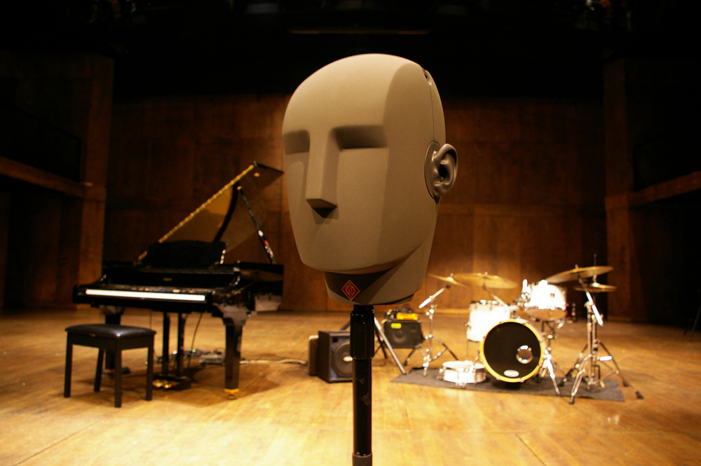
Acessórios
São utilizados para melhorar a qualidade do som captado e resolver alguns problemas práticos comuns à gravações tanto externas quanto internas.
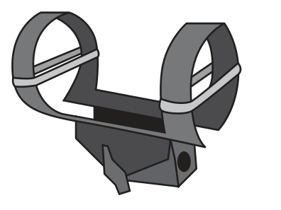
Suporte anti-choque: Adaptador para segurar o microfone de forma que não faça barulhos ao ser movido pelo operador. É muito utilizado em externas.
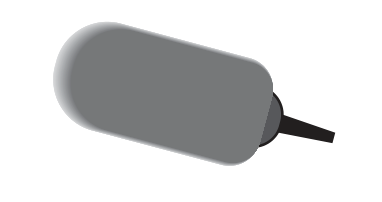
Protetor corta-vento: Cobertura colocada ao redor de um microfone para impedir que ele capte o som do vento ou de outros movimentos de ar enquanto grava. É muito utilizado em externas.
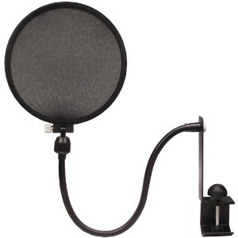
Filtro de pop: Protege o microfone de pequenos impulsos de som que podem ser captados mais forte que o desejado. Isso é especialmente importante ao captar a fala de uma pessoa. É muito utilizado em gravações de estúdio.
Gravadores digitais
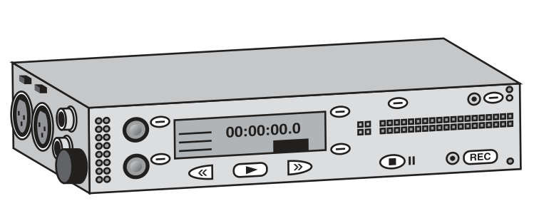
É um equipamento que recebe como entrada o sinal vindo de um ou mais microfones e o grava em formato digital de alta qualidade. É portátil e já realiza as funções de alimentar os microfones com a energia necessária, assim como pré-amplificar o sinal para níveis adequados. É fundamental em gravações externas. Em gravações internas esse papel é realizado diretamente pelo computador do operador de som, através de interfaces de áudio.
Editores de áudio ou DAWs (digital audio workstation)
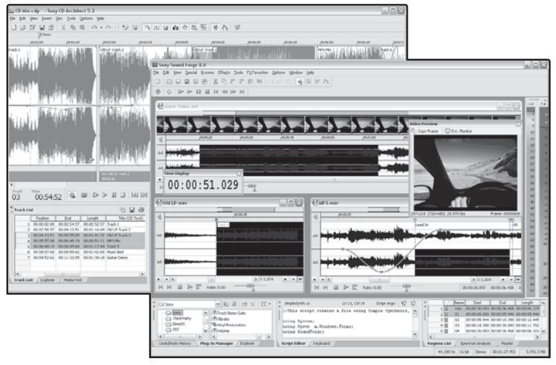
Nesses softwares o som captado durante as sessões de gravação podem ser tratados, cortados, equalizados para ficarem em seu formato final utilizável em um jogo. Esses editores normalmente permitem a aplicação de efeitos elaborados tanto em tempo real quanto em batch, assim como a conversão entre diversos formatos de arquivos de áudio.
Normalmente, no caso de gravações externas, os sons gravados são tratados posteriormente, enquanto que em gravações de estúdio alguns tratamentos e equalizações podem ser aplicados em tempo real. Em gravações de estúdio normalmente se utiliza algum tipo de mixer ou DAW que permita o trabalho em múltiplas faixas ao mesmo tempo, agilizando o processo devido ao acesso a máquinas estacionárias mais poderosas.
Organização
- Preparar uma lista prévia de sons
- Marcar bons takes (ou versões gravadas do som)
- Salvar arquivos com nomes legíveis e padronizados
- Sempre ouvir com atenção os resultados durante as gravações